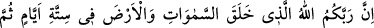
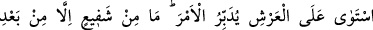
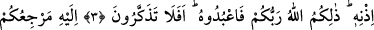
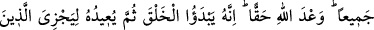
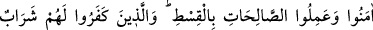
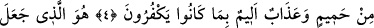
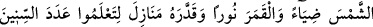
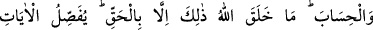
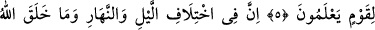
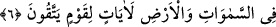

RABBİNİZ ALLAH
3. Şüphesiz Rabb’iniz (o) Allah’tır ki, gökleri ve yeri altı günde yarattı, sonra
Arş’a istivâ etti (hükmü altına aldı). İşi O tedbir eder (yönetir). Onun izni olmadan
hiç kimse şefâat edemez. İşte Rabb’iniz Allah budur. O halde O’na kulluk edin,
düşünmüyor musunuz?
4. Hepinizin dönüşü sadece O’nadır. Bu Allah’ın gerçek olarak verdiği sözdür.
Şüphesiz O önce yaratmaya başlar. Sonra inanıp iyi işler yapanlara adâletle
karşılık vermek için (onları huzûruna) geri çevirir. İnkâr edenlere gelince,
küfürlerinden dolayı onlara kaynar sudan bir içecek ve acı bir azâb vardır.
5. Güneşi ışık, Ay’ı nûr yapan, yılların sayısını ve (vakitlerin) hesabı(nı) bilmeniz
için Ona konaklar düzenleyen O’dur. Allah, bunları ancak gerçek ile (hikmetine
göre) yaratmıştır. (Allah) bilen bir kavim için âyetleri açıklar.
6. Şüphesiz gece ve gündüzün birbiri ardınca değişip durmasında, Allah’ın
göklerde ve yerde yarattığı şeylerde takvâ sâhibi bir toplum için nice alâmetler
vardır.
“Şüphesiz Rabb’iniz” şeklindeki hitap Mekke kâfirlerinedir. Yani sizi terbiye eden,
yaratıp büyüten, yetiştiren ve işlerinizi idâre eden “o Allah’tır ki, gökleri ve yeri altı
günde” altı vakitte “yarattı.” Gökler ve yer, mümkin varlıkların[7] aslı ve cisimlerin en
büyükleridir.
Eğer “İsm-i mevsûl denilen bağlaçlar muhatabın bildiği şeylere işâret edilmesi için